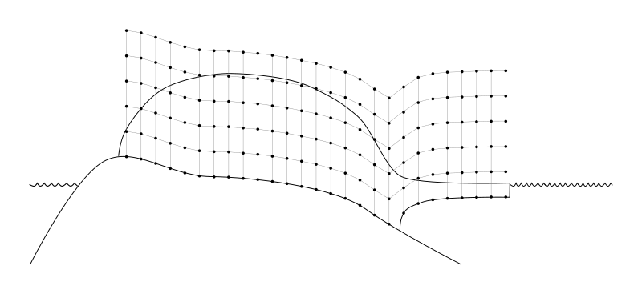
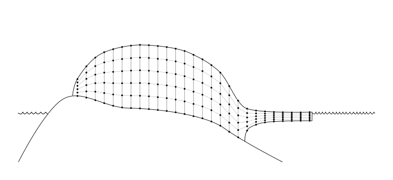
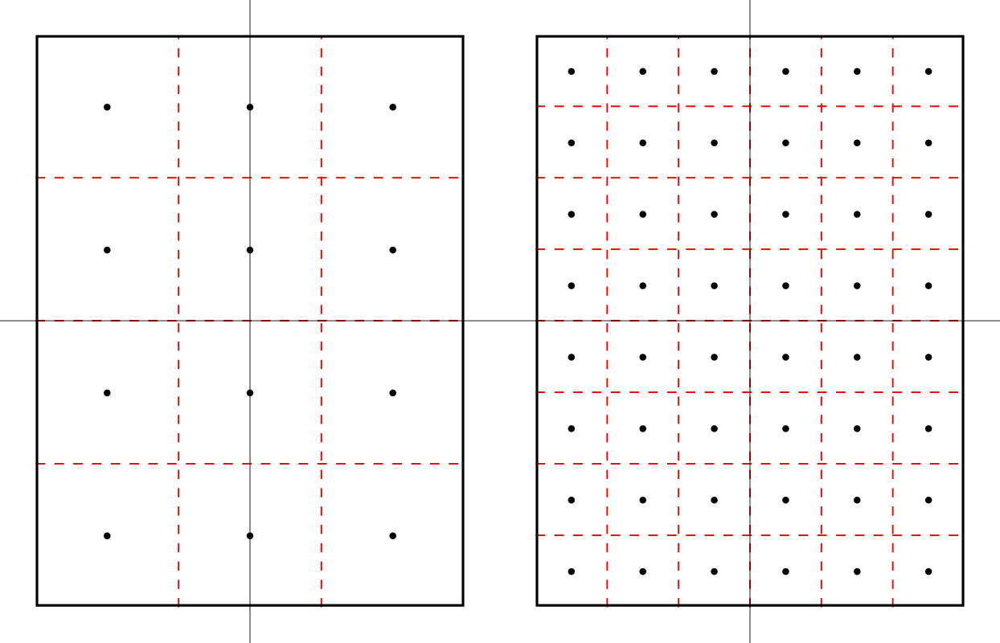
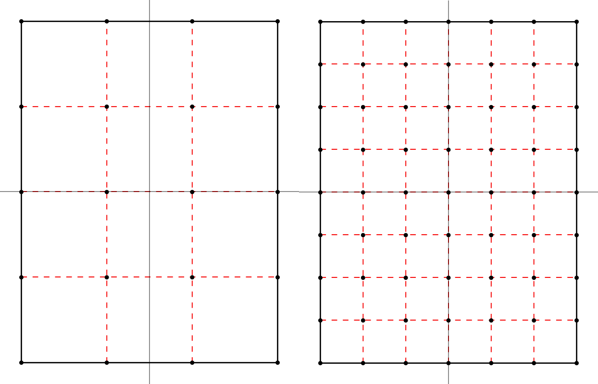

Spatial grid¶
The PISM grid covering the computational box is equally spaced in horizontal (\(x\) and \(y\))
directions. Vertical spacing in the ice is quadratic by default but optionally equal
spacing can be chosen; set using grid.ice_vertical_spacing at bootstrapping. The
bedrock thermal layer model always uses equal vertical spacing.
The grid is described by four numbers, namely the number of grid points grid.Mx
in the \(x\) direction, the number grid.My in the \(y\) direction, the number
grid.Mz in the \(z\) direction within the ice, and the number grid.Mbz
in the \(z\) direction within the bedrock thermal layer. These can be specified by options
-Mx, -My, -Mz, and -Mbz, respectively. Note that Mx,
My, Mz, and Mbz all indicate the number of grid points so the number of grid
spaces are one less.
The lowest grid point in a grounded column of ice, at \(z=0\), coincides with the highest
grid point in the bedrock, so grid.Mbz must always be at least one.

Fig. 18 PISM’s vertical grid with uniform \(z\) spacing. See On the vertical coordinate in PISM, and a critical change of variable for details.¶
Some PISM components (currently: the Blatter stress balance solver) use a geometry-following vertical grid with uniform vertical spacing withing each column. See Fig. 19.

Fig. 19 The “sigma” vertical grid used by PISM’s Blatter solver¶
Set grid.Mbz to a number greater than one to use the bedrock thermal model. When
a thermal bedrock layer is used, the depth of the layer is controlled by
grid.Lbz. Note that grid.Mbz is unrelated to the bed deformation model
(glacial isostasy model); see section Earth deformation models.
In the quadratically-spaced case the vertical spacing near the ice/bedrock interface is
about grid.lambda times finer than it would be with equal spacing for the same
value of grid.Mz, while the spacing near the top of the computational box is
correspondingly coarser. For a detailed description of the spacing of the grid, see the
documentation on Grid::compute_vertical_levels() in the PISM class browser.
The user should specify the grid when using -bootstrap or when initializing a
verification test (section Verification) or a simplified-geometry experiment (section
Simplified geometry experiments). If one initializes PISM from a saved model state using -i then the
input file determines all grid parameters. For instance, the command
pism -i foo.nc -y 100
should work fine if foo.nc is a PISM output file. Because -i input files take
precedence over options,
pism -i foo.nc -Mz 201 -y 100
will give a warning that “PISM WARNING: ignoring command-line option '-Mz'”.
Setting grid resolution¶
Once grid.Lx and grid.Mx are known, the grid resolution in the X
direction \(\Delta x\) is computed using (3) (if
grid.registration is “center”) or (4) (with the “corner” grid
registration). Alternatively, one can set grid.Lx and grid.dx to
compute \(M_x\) (\(L_x\) will be re-computed, if necessary):
in the case of the “center” grid registration; compare this to (3) and
note that we round \(\frac{2 L_x}{\Delta x}\) down to get \(M_x\). A similar equation is
used when grid.registration is “corner” (see (4)).
Set grid.Ly and grid.dy to set grid resolution in the Y direction.
Note
Recall that PISM will automatically convert from provided units into units used internally, so the command below will work as expected.
pism -bootstrap -i pism_Greenland_5km_v1.1.nc \
-dx 5km -dy 5km ...
Grid registration¶
PISM’s horizontal computational grid is uniform and (by default) cell-centered.[1]
This is not the only possible interpretation, but it is consistent with the finite-volume handling of mass (ice thickness) evolution is PISM.
Consider a grid with minimum and maximum \(x\) coordinates \(x_\text{min}\) and \(x_\text{max}\) and the spacing \(\dx\). The cell-centered interpretation implies that the domain extends past \(x_\text{min}\) and \(x_\text{max}\) by one half of the grid spacing, see Fig. 20.
{kind=link}

Fig. 20 Computational grids using the default (center) grid registration.¶
Left: a coarse grid. Right: a finer grid covering the same domain.
The solid black line represents the domain boundary, dashed red lines are cell boundaries, black circles represent grid points.
When getting the size of the domain from an input file, PISM will compute cell-centered grid parameters as follows:
This is not an issue when re-starting from a PISM output file but can cause confusion when specifying grid parameters at bootstrapping and reading in fields using “regridding.”
For example:
> pism -eisII A \
-grid.registration center \
-Lx 10 -Mx 4 -My 4 \
-y 0 -verbose 1 \
-o grid-test.nc
> ncdump -v x grid-test.nc | grep "^ x ="
x = -7500, -2500, 2500, 7500 ;
Note that we specified the domain half width of 10 km and selected 4 grid points in the \(x\) direction. The resulting \(x\) coordinates range from \(-7500\) meters to \(7500\) meters with the grid spacing of \(5\) km, so the width of the domain is \(20\) km, but \(x_{\text{max}} - x_{\text{min}} = 15\) km.
In summary, with the default (center) grid registration
where \(x_c\) is the \(x\)-coordinate of the domain center.
Note
One advantage of this approach is that it is easy to build a set of grids covering a given region such that grid cells nest within each other as in Fig. 20. In particular, this makes it easier to create a set of surface mass balance fields for the domain that use different resolutions but have the same total SMB.
Compare this to
> pism -eisII A \
-grid.registration corner \
-Lx 10 -Mx 5 -My 5 \
-y 0 -verbose 1 \
-o grid-test.nc
> ncdump -v x grid-test.nc | grep "^ x ="
x = -10000, -5000, 0, 5000, 10000 ;
Here the grid spacing is also 5 km, although there are 5 grid points in the \(x\) direction and \(x\) coordinates range from \(-10000\) to \(10000\).
With the “corner” grid registration
See Fig. 21 for an illustration.
{kind=link}

Fig. 21 Computational grids using the corner grid registration.¶
Left: a coarse grid. Right: a finer grid covering the same domain.
To switch between (3) and (4),
set the configuration parameter grid.registration.
Coordinate Reference Systems¶
PISM can use the PROJ library (see Required tools and libraries) and coordinate reference system (CRS) information to
compute latitudes and longitudes of cell centers (used by some parameterizations and saved to output files as variables
latandlon),compute latitudes and longitudes of cell corners (saved to output files as variables
lat_bndsandlon_bndsto simplify post-processing),interpolate inputs (climate forcing, etc) from a grid present in an input file to PISM’s computational grid.
Interpolation of model inputs requires YAC in addition to PROJ; see Flexible interpolation and asynchronous output using YAC and PROJ and Interpolation of input data.
Limitations
PISM’s supports most projections defined in the Appendix F of the CF Conventions document.
Longitude, latitude grids containing a pole are not supported yet.
The “Vertical perspective” grid mapping is not supported.
To use features listed above, compile PISM with PROJ and specify the grid projection in an input file as described below.
NetCDF metadata describing a CRS¶
To convert coordinates from a projected coordinate system to longitudes and latitudes PISM needs a string containing PROJ parameters corresponding to this mapping.
We support four ways of setting these parameters. Here they are listed in the order PISM uses when looking for a CRS definition in an input file.
crs_wktattribute of the grid mapping variable corresponding to a data variable (CF Conventions)proj_paramsattribute of the grid mapping variable corresponding to a data variable (convention used by CDO)global attributes
projorproj4(PISM’s old convention)attributes of the grid mapping variable corresponding to a data or domain variable, according to CF Conventions.
We recommend following CF Conventions if possible. However, sometimes what we want is a
minimal modification of a file’s metadata needed to make it usable. In this case setting
the proj attribute might be easier.
If the proj (or proj_params) attribute has the form "+init=EPSG:XXXX",
"+init=epsg:XXXX", "EPSG:XXXX" or "epsg:XXXX" where XXXX is an EPSG code
listed below PISM will convert the EPSG code to a grid mapping variable conforming to CF
metadata conventions and use that in PISM’s output files.
EPSG code |
Description |
|---|---|
3413 |
|
3031 |
|
3057 |
|
5936 |
|
26710 |
Grid mapping variable¶
PISM supports some CF grid mapping variables corresponding to coordinate reference systems described in Appendix F of the CF Conventions document. Please see CF Conventions sections 5.6 for details about specifying the grid mapping for a NetCDF variable.
CRS Name |
|
|---|---|
Albers Equal Area |
|
Azimuthal equidistant |
|
Lambert azimuthal equal area |
|
Lambert conformal |
|
Lambert Cylindrical Equal Area |
|
Latitude-Longitude |
|
Mercator |
|
Orthographic |
|
Polar stereographic |
|
Rotated pole |
|
Stereographic |
|
Transverse Mercator |
|
ncdump -h output for a climate forcing file following CF metadata
conventions and using the polar stereographic projection¶netcdf climate_forcing {
dimensions:
time = UNLIMITED ; // (12 currently)
nv = 2 ;
x = 301 ;
y = 561 ;
variables:
double time(time) ;
time:units = "days since 1980-1-1" ;
time:calendar = "365_day" ;
time:long_name = "time" ;
time:bounds = "time_bounds" ;
double time_bounds(time, nv) ;
double x(x) ;
x:units = "m" ;
x:standard_name = "projection_x_coordinate" ;
double y(y) ;
y:units = "m" ;
y:standard_name = "projection_y_coordinate" ;
char mapping;
mapping:grid_mapping_name = "polar_stereographic";
mapping:false_easting = 0.0;
mapping:false_northing = 0.0;
mapping:latitude_of_projection_origin = 90.0;
mapping:scale_factor_at_projection_origin = 1.0;
mapping:standard_parallel = 70.0;
mapping:straight_vertical_longitude_from_pole = -45.0;
double air_temp(time, y, x) ;
air_temp:units = "kelvin" ;
air_temp:long_name = "near surface air temperature" ;
air_temp:grid_mapping = "mapping" ;
double precipitation(time, y, x) ;
precipitation:units = "kg m^-2 year^-1" ;
precipitation:long_name = "total (liquid and solid) precipitation" ;
precipitation:grid_mapping = "mapping" ;
:Conventions = "CF-1.8";
}
If a grid mapping variable contains the crs_wkt attribute as described in CF
Conventions sections 5.6 PISM will use this string to initialize the
mapping from projected coordinates to longitude and latitude coordinates and will not
attempt to create a PROJ string from other attributes of this variable.
If a grid mapping variable contains the proj_params attribute as used by CDO PISM
will use this string to initialize the mapping from projected coordinates to longitude and
latitude coordinates and will not attempt to create a PROJ string from other attributes of
this variable.
Attribute proj_params of a grid mapping variable¶
netcdf climate_forcing {
dimensions:
time = UNLIMITED ; // (12 currently)
nv = 2 ;
x = 301 ;
y = 561 ;
variables:
double time(time) ;
time:units = "days since 1980-1-1" ;
time:calendar = "365_day" ;
time:long_name = "time" ;
time:bounds = "time_bounds" ;
double time_bounds(time, nv) ;
double x(x) ;
x:units = "m" ;
x:standard_name = "projection_x_coordinate" ;
double y(y) ;
y:units = "m" ;
y:standard_name = "projection_y_coordinate" ;
char mapping;
mapping:proj_params = "EPSG:3413";
double air_temp(time, y, x) ;
air_temp:units = "kelvin" ;
air_temp:long_name = "near surface air temperature" ;
air_temp:grid_mapping = "mapping" ;
double precipitation(time, y, x) ;
precipitation:units = "kg m^-2 year^-1" ;
precipitation:long_name = "total (liquid and solid) precipitation" ;
precipitation:grid_mapping = "mapping" ;
}
Note
This data set does not follow CF metadata conventions.
Global attribute proj¶
Note
The global attribute proj4 is still supported for compatibility with older PISM
versions.
For example, the input file pism_Greenland_5km_v1.1.nc in Getting started: a Greenland ice sheet example contains the
following metadata:
> ncdump -h pism_Greenland_5km_v1.1.nc | grep :proj
:proj = "+proj=stere +lat_0=90 +lat_ts=71 +lon_0=-39 +k=1 +x_0=0 +y_0=0 +ellps=WGS84 +towgs84=0,0,0,0,0,0,0 +units=m +no_defs" ;
The spinup run in that example disables the code re-computing longitude, latitude grid
coordinates using projection information to avoid the dependency on PROJ (look for
-grid.recompute_longitude_and_latitude in the command). If we remove this option,
PISM will report the following.
> pism -i pism_Greenland_5km_v1.1.nc \
-bootstrap -Mx 76 -My 141 -Mz 101 -Mbz 11 ... \
-grid.recompute_longitude_and_latitude true ... -o output.nc
...
* Got projection parameters "+proj=stere +lat_0=90 +lat_ts=71 +lon_0=-39 +k=1 +x_0=0 +y_0=0 +ellps=WGS84 +towgs84=0,0,0,0,0,0,0 +units=m +no_defs" from "pism_Greenland_5km_v1.1.nc".
* Computing longitude and latitude using projection parameters...
...
... done with run
Writing model state to file `output.nc'...
To simplify post-processing and analysis with CDO PISM adds the PROJ string (if known)
to the mapping variable, putting it in the proj_params attribute.
> ncdump -h g20km_10ka_hy.nc | grep mapping:
mapping:ellipsoid = "WGS84" ;
mapping:grid_mapping_name = "polar_stereographic" ;
mapping:false_easting = 0. ;
mapping:false_northing = 0. ;
mapping:latitude_of_projection_origin = 90. ;
mapping:standard_parallel = 71. ;
mapping:straight_vertical_longitude_from_pole = -39. ;
mapping:proj_params = "+proj=stere +lat_0=90 +lat_ts=71 +lon_0=-39 +k=1 +x_0=0 +y_0=0 +ellps=WGS84 +towgs84=0,0,0,0,0,0,0 +units=m +no_defs" ;
Using a grid definition file¶
Configuration parameters grid.dx, grid.dy, grid.Mx,
grid.My, grid.Lx, grid.Ly make it relatively easy to change
the size and resolution of a grid, but not its location on the globe.
The parameter grid.file makes it possible to read a grid definition from a
NetCDF file and then override values read from this file using configuration parameters,
if necessary. Its argument is a string containing the name of a grid definition file or
a string containing the name of a NetCDF file and the name of a 2D variable to get grid
information from, separated by a colon, file_name:variable_name (for example:
pism_Greenland_5km_v1.1.nc:thk).
A grid definition file has to contain a “domain variable” (see CF Conventions version
1.11 or later, section 5.8, ). A domain variable is a scalar variable that has the
dimensions attribute, a space-separated list of names of coordinate variables defining
the domain. It may also have other attributes, e.g. grid_mapping to specify the
coordinate reference system.
See Listing 5 for an example of a grid definition. Here the size of a domain is determined as described in section Grid registration; see equations (2), (3) and (4).
netcdf grid {
dimensions:
x = 9 ;
y = 14 ;
variables:
double x(x) ;
x:units = "km" ;
x:standard_name = "projection_x_coordinate" ;
double y(y) ;
y:units = "km" ;
y:standard_name = "projection_y_coordinate" ;
byte domain ;
domain:dimensions = "x y" ;
domain:grid_mapping = "mapping";
domain:long_name = "Greenland model domain definition" ;
byte mapping ;
mapping:grid_mapping_name = "polar_stereographic" ;
mapping:latitude_of_projection_origin = 90 ;
mapping:scale_factor_at_projection_origin = 1. ;
mapping:straight_vertical_longitude_from_pole = -45 ;
mapping:standard_parallel = 70 ;
mapping:false_northing = 0 ;
mapping:false_easting = 0 ;
:Conventions = "CF-1.8";
data:
x = -700, -500, -300, -100, 100,
300, 500, 700, 900 ;
y = -3300, -3100, -2900, -2700,
-2500, -2300, -2100, -1900,
-1700, -1500, -1300, -1100,
-900, -700 ;
}
Note
PISM uses the first and last values of
xin Listing 5 to determine \(x_{\text{min}}\) and \(x_{\text{max}}\) and the first and second values ofxto compute \(\Delta x\), and similarly fory. Other values ofxandyare not used.This example specifies grid coordinates in km. PISM will automatically convert to meters used internally.
Note that it can also be used as a domain and CRS definition since configuration
parameters grid.Mx and grid.My (or grid.dx and
grid.dy) can be used to create a finer grid covering the same domain.
For example, Listing 6 below shows how one could set up a simulation using a \(5\) km grid covering this domain.
pism \
-bootstrap -i pism_Greenland_5km_v1.1.nc \
-grid.file grid.nc \
-dx 5km -dy 5km \
-y 1s \
-o output.nc
Note
The grid in the data set pism_Greenland_v1.1.nc from section Getting started: a Greenland ice sheet example and
the grid described in Listing 5 use different projections.
PISM will use YAC to re-project and interpolate data between these grids; see
Interpolation of input data.
A better way to define a modeling domain¶
Defining the domain extent by setting \(x_1=x_{\text{min}}\), \(x_2\) and \(x_N=x_{\text{max}}\) in Listing 6 so that \(L_x\) comes out “right” according to equation (2) is very awkward. There is a better way; see Listing 7 for an example.
netcdf domain {
dimensions:
// length of the x dimension is not important
x = 1 ;
// length of the y dimension is not important
y = 1 ;
nv2 = 2 ;
variables:
double x(x) ;
x:units = "km" ;
x:standard_name = "projection_x_coordinate" ;
x:bounds = "x_bnds";
double x_bnds(x, nv2);
double y(y) ;
y:units = "km" ;
y:standard_name = "projection_y_coordinate" ;
y:bounds = "y_bnds";
double y_bnds(y, nv2);
byte domain;
domain:dimensions = "x y";
domain:grid_mapping = "mapping";
byte mapping;
mapping:proj_params = "EPSG:3413";
data:
x_bnds = -800, 1000;
y_bnds = -3400, -600;
}
Note
This file defines exactly the same domain as Listing 6.
If
xandybounds (x_bndsandy_bndsin Listing 7) are present then only bounds are used to determine the domain extent and the number of grid points. Values ofxandyare ignored.All methods of specifying the CRS described in Coordinate Reference Systems are supported (here: the
proj_paramsattribute).Similarly to Listing 4, a file with metadata in Listing 7 does not follow CF conventions.
Minimal domain definition
If following conventions is not a concern a domain definition file can be stripped down to its smallest form, see Listing 8.
netcdf domain_minimal {
dimensions:
x = 1 ;
y = 1 ;
nv2 = 2 ;
variables:
double x(x) ;
x:units = "km" ;
x:bounds = "x_bnds";
double x_bnds(x, nv2);
double y(y) ;
y:units = "km" ;
y:bounds = "y_bnds";
double y_bnds(y, nv2);
byte domain;
domain:dimensions = "x y";
:proj = "EPSG:3413";
data:
x_bnds = -800, 1000;
y_bnds = -3400, -600;
}
Parallel domain distribution¶
When running PISM in parallel with mpiexec -n N, the horizontal grid is distributed
across \(N\) processes [2]. PISM divides the grid into \(N_x\) parts in the \(x\) direction and
\(N_y\) parts in the \(y\) direction. By default this is done automatically, with the goal
that \(N_x\times N_y = N\) and \(N_x\) is as close to \(N_y\) as possible. Note that \(N\) should,
therefore, be a composite (not prime) number.
Users seeking to override this default can specify \(N_x\) and \(N_y\) using configuration
parameters grid.Nx and grid.Ny.
Once \(N_x\) and \(N_y\) are computed, PISM computes sizes of sub-domains \(M_{x,i}\) so that
\(\sum_{i=1}^{N_x}M_{x,i} = M_x\) and \(M_{x,i} - \left\lfloor M_x / N_x \right\rfloor < 1\).
To specify strip widths \(M_{x,i}\) and \(M_{y,i}\), use configuration parameters
grid.procs_x and grid.procs_y. Both of these parameters take a
comma-separated list of numbers as its argument. For example,
mpiexec -n 3 pism -eisII A -Mx 101 -My 101 \
-Nx 1 -grid.procs_x 101 \
-Ny 3 -grid.procs_y 20,61,20
splits a \(101 \times 101\) grid into 3 strips along the \(x\) axis.
To see the parallel domain decomposition from a completed run, see the rank
variable in the output file, e.g. using -o_size big. The same rank variable is
available as a spatial diagnostic field (section Spatially-varying diagnostic quantities).
Configuration parameters controlling grid choices¶
grid.Lbz(1000 meters) Thickness of the thermal bedrock layer. (Inactive ifgrid.Mbz< 2)grid.Lx(no default value; units: km) Half-width of the computational box in the \(X\) directiongrid.Ly(no default value; units: km) Half-width of the computational box in the \(Y\) directiongrid.Lz(4000 meters) Height of the computational domain.grid.Mbz(1) Number of thermal bedrock layers; 1 level corresponds to no bedrock.grid.Mx(no default value; units: count) Number of grid points in the x direction (see alsogrid.dx)grid.My(no default value; units: count) Number of grid points in the y direction (see alsogrid.dy)grid.Mz(31) Number of vertical grid levels in the ice.grid.Nx(no default value; units: count) Number of MPI sub-domains in the x direction (uses default if negative)grid.Ny(no default value; units: count) Number of MPI sub-domains in the y direction (uses default if negative)grid.allow_extrapolation(no) Allow extrapolation during regridding.grid.dx(no default value; units: meter) Grid resolution in the X direction (overridesgrid.Mx)grid.dy(no default value; units: meter) Grid resolution in the Y direction (overridesgrid.My)grid.filegrid definition file used to initialize the horizontal computational gridgrid.ice_vertical_spacing(quadratic) vertical spacing in the icegrid.lambda(4) Vertical grid spacing parameter. Roughly equal to the factor by which the grid is coarser at an end away from the ice-bedrock interface.grid.max_stencil_width(2) Maximum width of the finite-difference stencil used in PISM.grid.periodicity(xy) horizontal grid periodicitygrid.procs_xcomma-separated list of custom sub-domain widths in the X directiongrid.procs_ycomma-separated list of custom sub-domain widths in the Y directiongrid.recompute_longitude_and_latitude(yes) Re-compute longitude and latitude using grid information and provided projection parameters. Requires PROJ.grid.registration(center) horizontal grid registration
Footnotes
| Previous | Up | Next |